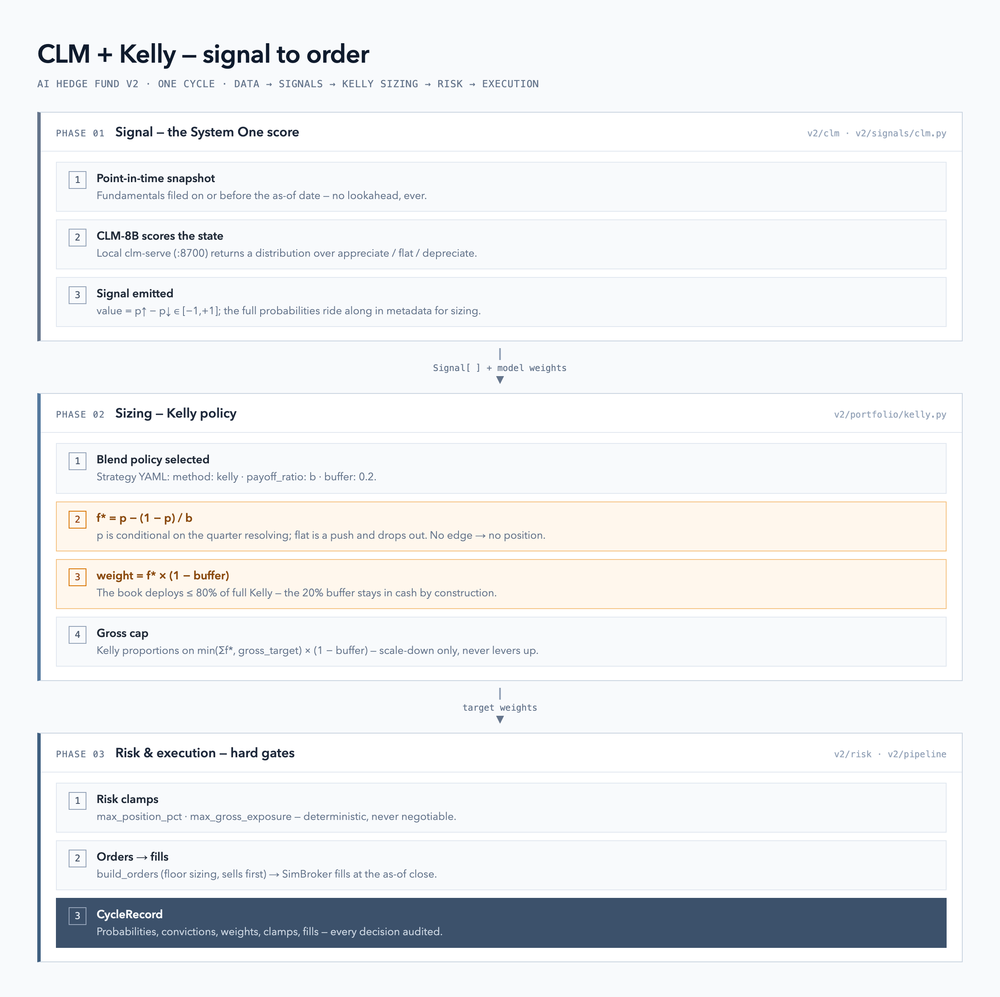

The local CLM-8B System One model now scores every name in the pipeline, and a new
Kelly blend sizes positions from those probabilities with a 20% safety buffer.
Both ride existing interfaces — AlphaModel and BlendPolicy — so nothing downstream changes.
| Path | Role |
|---|---|
| v2/clm/client.py | HTTP client for a local clm-serve (POST /v1/systemone); raises CLMError on any failure. |
| v2/clm/cache.py | One JSON per scoring decision (.v2_cache/clm/) — cache, replay record, and debug trail in one. |
| v2/signals/clm.py | CLMAnalyst: point-in-time snapshot → appreciate/flat/depreciate probabilities → Signal. |
| v2/portfolio/kelly.py | kelly_fraction (f* = p − (1−p)/b) + blend_kelly (probabilities → buffered weights). |
| v2/fund/spec.py | BlendPolicy gains method: kelly, payoff_ratio, buffer (default 0.2); scoped validation. |
| v2/pipeline/run_cycle.py | Dispatches on the blend method — one pipeline, two sizing policies. |
| v2/signals/__init__.py | clm registered in ALPHA_MODEL_REGISTRY. |
| v2/funds/clm-kelly.yaml · clm-conviction.yaml | Demo mandates: same CLM signals, both sizing policies. |
| v2/strategies/clm-kelly.yaml | Strategy-library entry for the fund builder. |
CLM scores candidate actions against a state instead of generating text. The state is the shared point-in-time fundamentals snapshot; the candidate set is a closed, typed question about the next quarter:

clm-serve returns appreciate / flat / depreciate probabilities.CLMAnalyst emits value = p↑ − p↓ ∈ [−1, 1] with the full distribution in metadata.probabilities.Failure contract mirrors the LLM agents: data errors propagate; CLM call/parse failures abstain
(metadata.abstained); an unchanged snapshot never pays a second call. Probabilities are relative to the option set.
For a directional bet the outcome space is three-way (up / flat / down). A flat outcome is a push — it
contributes log(1) = 0 to expected log wealth, so it drops out of the maximization and p is taken
conditional on the quarter resolving: p = p↑ / (p↑ + p↓). With b = 1 this reads
f* = (p↑ − p↓) / (p↑ + p↓).
The buffer is a budget reserve, not a haircut that scaling can cancel: under the cap the stake is
exactly f* × (1 − buffer) per name; when Kelly wants the whole cap, proportions are held on the buffered
budget gross_target × (1 − buffer). Either way the remainder sits in cash, and the fund's risk limits
remain the master gate afterwards (max_position_pct, max_gross_exposure).
Signals without probabilities fall back to p = (1 + |conviction|) / 2, so any model in the
registry can feed the blend. Abstained signals are excluded from both blending and sizing.
One cycle on 2025-06-03, five megacaps, $100k, both mandates run against the real CLM service (every name resolved bearish — a short book):
| Ticker | p↑ | p flat | p↓ | p (cond.) | f* | Kelly weight | Conviction weight |
|---|---|---|---|---|---|---|---|
| AAPL | 0.14 | 0.52 | 0.35 | 0.717 | 0.433 | −0.132 | −0.206 |
| MSFT | 0.06 | 0.78 | 0.16 | 0.717 | 0.435 | −0.133 | −0.093 |
| NVDA | 0.10 | 0.31 | 0.59 | 0.858 | 0.716 | −0.219 | −0.250 * |
| GOOGL | 0.05 | 0.78 | 0.17 | 0.760 | 0.519 | −0.159 | −0.114 |
| AMZN | 0.05 | 0.79 | 0.16 | 0.757 | 0.515 | −0.157 | −0.106 |
* clamped by max_position_pct: conviction-weighting requested −0.483 and risk cut it to −0.250.
# 1. start the local CLM-8B service (embeddings :8092, clm-serve :8700) ~/clm/scripts/start-clm.sh # 2. Kelly-sized mandate (buffer 0.2) poetry run python -m v2.run v2/funds/clm-kelly.yaml --date 2025-06-03 # 3. same signals, default conviction sizing — compare the books poetry run python -m v2.run v2/funds/clm-conviction.yaml --date 2025-06-03 # 4. tests for this integration poetry run pytest v2/clm v2/signals/test_clm_analyst.py v2/portfolio/test_kelly.py \ v2/pipeline/test_run_cycle_kelly.py v2/fund/test_blend_policy.py -q
Knobs in the strategy YAML: method: kelly · payoff_ratio (b, default 1.0) ·
buffer (default 0.2) · gross_target (cap on deployment). Env: CLM_BASE_URL,
CLM_MODEL. The service runs outside this repo — see v2/clm/README.md.
.v2_cache/clm/; a rerun over unchanged snapshots is free and byte-identical.